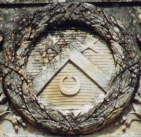
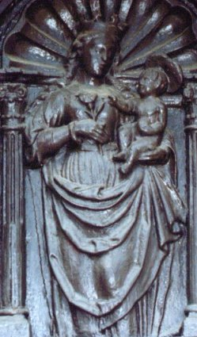
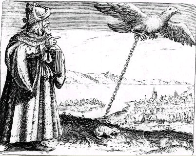

Emblema V.
revu le 4 octobre 2002
Appone mulieri super mammas bufonem, ut ablactet eum, & moriatur mulier, sitque bufo grossus de lacte.
(Place un crapaud sur le sein de la femme, pour qu’elle l’allaite et meure et que le crapaud soit gros de ce lait.)
Sur le sein de la femme place un crapaud1 glacé
Pour que, tel un enfant, il s’abreuve de lait.
Tarissant la mamelle, qu’il s’enfle, énorme bosse,
Et la femme épuisée abandonne la vie.
Ainsi tu te feras un illustre remède
Qui chasse le poison du cœur, ôtant son mal.2
FUGA V
DISCOURS V.L‘assemblée entière des philosophes s’accorde pour déclarer que leur œuvre n’est rien d’autre que mâle et femelle : au mâle, il appartient d’engendrer et de dominer sur la femme ; à celle-ci, de concevoir, de devenir grosse, d’enfanter, d’allaiter et d’élever la progéniture, ainsi que d’être soumise à l’autorité du mâle. Comme elle réchauffe et nourrit, sous son sang, l’enfant conçu avant qu’il soit produit à la lumière, elle fait de même, au moyen de son lait, lorsqu’il est né. Ainsi la nature a préparé pour le tendre petit, dans les mamelles de la femme, un aliment digestible et proportionné qui attend sa venue comme premier approvisionnement, premier viatique dans cette carrière du monde. C’est pourquoi, grâce au lait, il est nourri, il croît et augmente jusqu’au point où il possède les instruments nécessaires pour broyer le pain, c’est-à-dire les dents. Il est alors sevré à bon droit, puisque la nature a pourvu à lui fournir une autre nourriture plus solide.3
Mais ici les philosophes disent qu’il faut placer sur le sein de la femme un crapaud, pour qu’elle le nourrisse de son lait, à la manière d’un enfant. C’est là chose déplorable et affreuse à contempler, disons même impie, que le lait destiné à un petit enfant soit présenté au crapaud, bête venimeuse et ennemie de la nature humaine. Nous avons entendu et lu des récits sur les serpents et les dragons qui tarissent les pis des vaches. Peut-être les crapauds auraient-ils la même convoitise si l’occasion s’en offrait à eux chez ces animaux. On connaît l’histoire d’un crapaud qui, pendant le sommeil d’un villageois, lui occupa la bouche et l’intérieur des lèvres, de telle manière qu’il n’eût pu être délogé par aucun stratagème, sinon grâce à une violence qui aurait été accompagnée d’un péril mortel et qui dut en conséquence être écarté : le crachement du venin (qui lui sert, dit-on, d’armes offensives et défensives). On découvrit donc, pour le pauvre homme, un remède tiré d’une antipathie, celle d’une énorme araignée et du crapaud qui se poursuivent mutuellement d’une haine mortelle. On le porta donc, avec le crapaud, tout droit au lieu où l’araignée toute boursouflée avait exposé ses ouvrages tissés. Dès que celle-ci eut aperçu le crapaud, elle descendit à la hâte sur son dos et le piqua de son dard. Comme, à la vérité, il n’en éprouvait aucun dommage, elle descendit une seconde fois et le perça de nouveau plus fortement. Alors, on vit le crapaud enfler et tomber mort de la bouche de l’homme, sans aucun préjudice pour celui-ci. Mais ici c’est le contraire qui se produit : car le crapaud occupe non la bouche mais le sein de la femme, dont le lait le fait croître jusqu’à ce qu’il devienne d’une grandeur et d’une force considérables et que, de son côté, la femme, épuisée, dépérisse et meure. Car le venin, par les veines de la poitrine, se communique facilement au cœur qu’il empoisonne et éteint, comme le montre la mort de Cléopâtre : elle plaça des vipères sur son sein quand elle eut décidé d’être devancée par la mort, pour ne pas être tramée dans les mains et les triomphes de ses vainqueurs. Mais, afin que nul n’estime les philosophes assez cruels pour ordonner d’appliquer à la femme un serpent venimeux, on doit savoir que ce crapaud est le petit, le fils de cette même femme, issu d’un enfantement monstrueux. Il doit, en conséquence, selon le droit naturel, jouir et se nourrir du lait de sa mère. Il n’entre pas dans la volonté du fils que la mère meure. Car il n’a pu empoisonner sa mère, celui qui avait été formé dans ses entrailles et s’était augmenté, grâce à son sang.4
Est-ce, en vérité, un prodige, que de voir un crapaud naître d’une femme ? Nous savons que cela s’est produit à une autre occasion. Guillaume de Newbridge, écrivain anglais, écrit dans ses Commentaires (avec quelle fidélité, que d’autres en décident !) que, tandis que l’on partageait une certaine grande pierre, dans une carrière située sur le territoire de l’évêque de Wilton, on trouva à l’intérieur un crapaud vivant muni d’une chaîne d’or. Sur l’ordre de l’évêque, il fut enfoui à la même place et plongé dans de perpétuelles ténèbres, de peur qu’il ne portât avec lui quelque mauvais sort. Tel est aussi ce crapaud, car il est rehaussé d’or. Ce n’est pas sans doute un or apparent et consistant en l’ouvrage artificiel ,d’une chaîne, mais un or intérieur, naturel, celui de la pierre que d’autres nomment borax, chelonitis, batrachite, crapaudine ou garatron.5
Cette pierre, en effet, l’emporte de loin en puissance sur l’or en face de n’importe quel venin d’animal, et on l’insère d’ordinaire dans l’or, comme dans une boîte ou une enveloppe, de peur qu’il ne se gâte ou ne se perde. Mais il faut que cette pierre soit légitime quand on la demande à l’animal ; si, par contre, on l’extrait des fosses souterraines, comme c’est l’usage, qu’on la travaille pour lui donner la forme de la précédente et qu’on lui fasse tenir sa place, elle doit être choisie à partir des meilleurs minéraux, ceux qui soulagent le cœur. C’est en eux, en effet, que l’on trouve véritablement le crapaud philosophique, non dans une carrière (comme le prétend cet inventeur de fables) et il possède l’or en lui, non au-dehors pour en faire étalage. Dans quel but, en effet, s’ornerait un crapaud caché et enfermé dans les ténèbres ? Serait-ce par hasard pour recevoir le salut magnifique du scarabée si, au crépuscule, il se portait à sa rencontre ? Quel orfèvre souterrain lui aurait fabriqué une chaîne d’or ? Serait-ce par hasard le père des enfants verdoyants qui sortirent de la terre de saint Martin6disons, de la terre elle-même, comme aussi, selon le même auteur, deux chiens sortirent d’une carrière ?
Notes1. le crapaud est l'un des symboles du Soufre. Les Chinois le considèrent comme une divinité de la lune, ce qui exprime d'une certaine façon une vérité hermétique, puisque le Soufre est porté dans le ventre du Mercure. Il n'apparaît qu'à l'Aurore de l'oeuvre, raison pour laquelle on l'appelle animal crépusculaire. A ce sujet, voila la légende chinoise :
"la femme de Yi-le-Bon-Archer, qui s'était enfuie après lui avoir dérobé la drogue de l'immortalité qu'il avait reçue de la Reine Mère de l'Occident, parvint dans la lune et y fut transformée en crapaud."
Il faut rapprocher ce texte de celui de De Cyrano Bergerac :
"Ils consultèrent s'ils se saisiraient du mulet, et délibérément que oui; mais ayant décousu le paquet, et au premier volume qu'ils ouvrirent s'étant rencontré la Physique de M. Descartes, quand ils aperçurent tous les cercles par lesquels ce philosophe a distingué le mouvement de chaque planète, tous d'une voix hurlèrent que c'était les cernes que je traçais pour appeler Belzébuth. Celui qui le tenait le laissa choir d'appréhension, et par malheur en tombant il s'ouvrit dans une page où sont expliquées les vertus de l'aimant; je dis par malheur, pour ce qu'à l'endroit dont je parle il y a une figure de cette pierre métallique, où les petits corps qui se déprennent de sa masse pour accrocher le fer sont représentés comme des bras. A peine un de ces marauds l'aperçut, que je l'entendis s'égosiller que c'était là le crapaud qu'on avait trouvé dans l'auge de l'écurie de son cousin Fiacre, quand ses chevaux moururent." [Histoire comique des etats et empires du soleil, De Cyrano Bergerac]
Il y a là plus que de simples coïncidences. Dans la légende chinoise, on devine qu'une substance doit être sublimée dans un certain solvant ; chez Bergerac, cette substance est trouvée dans une étable et il est tout à fait remarquable qu'un rapport s'établisse entre l'aimant [par cabale le Mercure] et le crapaud [Soufre]. Ce sont là des associations qu'on dresse davantage avec le sentiment qu'avec la raison. Si vous n'êtes pas sensible au pouvoir d'ésotérisme de bon aloi que recèlent ces textes, vous ne pourrez rien comprendre des secrets de l'Art.
2. Le crapaud présente tous les caractères du Soufre, de celui qui seul, peut transformer le Mercure commun en Mercure philosophique et qui peut assurer son animation. Lié à l'eau, à la terre, à l'humidité, on le dit invulnérable à la morsure du serpent [du Mercure] ; il exprime le concept de mort et de renouvellement : c'est une vérité hermétique. La phase de dissolution ou putréfaction n'est autre que la disparition [la mort] provisoire du Soufre qui renaît, tel le phénix, lors de la réincrudation. Selon une autre tradition, l'huile de crapaud pénètre la pierre : c'est dire que le Soufre peut pénétrer le Mercure, grâce à la fluidité de sa nature, qui est d'essence spirituelle. Il est remarquable d'observer que le crapaud, en plein accord avec la doctrine des alchimistes, aurait été en Occident un symbole royal et solaire, antérieurement à la fleur de lis ; c'est à ce titre qu'il figure sur l'étendard de Clovis. Le crapaud exprime bien l'image du Rebis allant au pays des morts : dans l'ancienne Egypte, le crapaud était associé aux morts et l'on en a découvert de momifiés dans les tombeaux. Le crapaud est, avec le serpent, l'attribut naturel du squelette au Moyen Âge [cf. Douze Clefs de Basile Valentin et la Philosophia reformata de Mylius, sur le squelette]. En Grèce, le crapaud [Jrinh] était le nom d'une courtisane qui était semblable à Aphrodite sortant des eaux [Ajrodith anaduomenh], ou début de la coagulation de l'eau mercurielle.
FIGURE I
(château de la Court d'Aron - parc floral - détail du crapaud ou Soufre lunaire - cliché Alain Mauranne)3. C'est la substance connue sous le nom de Lait de Vierge [voir cette expression en recherche]. Cette matière, au dire des alchimistes, est d'origine divine [jeu de mot sur qeion et qeioV] et c'est, au vrai, la parole de Dieu qui s'exprime par son intermède : elle est comparée [Denys le Pseudo-Aréopagite] à la rosée, à l'eau permanente, au vin, au miel parce que cette matière [le Mercure] a le pouvoir, dans le petit monde de l'alchimiste, de faire naître la vie, de faire croître la Pierre, de ranimer les Corps [réincrudation] et enfin, comme le miel, de guérir et de conserver. Mais c'est par erreur qu'on assimile la Pierre philosophale au Lait de Vierge, puisque c'est précisément la matière voilée sous cette expression qui permet à la Pierre d'apparaître et d'augmenter. Faut-il ajouter que le lait est un symbole lunaire ? Ajoutons que le Soufre représente l'agent ; que la femme représente le patient. Il n'est pas aisé de représenter un processus dynamique par une image statique et c'est bien là que réside l'une des plus grosses difficilutés que l'étudiant trouvera sur sa route. Le crapaud, faut-il le dire, représente aussi une inclusion d'une matière étrangère dans une pierre gemme.
4. On pourrait ajouter quelques détails de cabale qui permettraient avec certitude de pouvoir lier le crapaud [jrunh] avec l'esprit [jronew] de façon à en faire une âme [jrhn] sensible. S'il en était besoin, nous ajouterions que le crapaud était anciennement dédié à Saturne et l'inverse de la grenouille dont il serait la face lunaire, infernale et ténébreuse, exprimant bien l'idée de la dissolution de la matière lors de la phase de putréfaction. C'est peut-être en Autriche qu'on a révélé la véritable nature de ce batracien : il ne faut pas faire de peine aux crapauds qui sautillent tranquillement car ce sont des âmes malheureuses ; on veut bien le croire...On a vu plus haut que le crapaud pouvait jeter un maléfice au bétail [cf. Cyrano de Bergerac, citant Agrippa dans ses Lettres pour les sorciers. Sur Agrippa, cf. l'Escalier des Sages - I].
FIGURE II
(Vierge Noire : détail d'une porte du château de la Court d'Aron, anthracite - cliché Alain Mauranne)5. la crapaudine est une pierre précieuse dont on pensait qu'elle provenait de la putréfaction des dents fossiles d'un poisson ; elle doit son nom au fait qu'on croyait qu'elle pouvait provenir de la tête du crapaud : le batracien la rejetait par la bouche lorsqu'on lui présentait un drap rouge [ce qui n'a rien d'étonnant pour l'étudiant au fait des arcanes de l'Art]. Le borax, nous en avons parlé dans d'autres sections, est un sel qui sert de fondant et qui a été utilisé dans de nombreuses expériences de haute spagyrie par certains savants au XIXe siècle [cf. Mercure - Verbum dimissum], mais ce n'est pas le borax dont on parle ici. La chélonite est l'autre nom de la batrachite [batrakiV] : c'est une pierre d'un vert claire qui présente une inclusion et l'on a l'impression de distinguer un oeil en son milieu ; en latin, batrachites est l'autre nom de la crapaudine. Le mot garatron est une abréviation de garatroine ou pierre de crapaud [Anselme Boece De Boodt, Histoire des pierreries, Lyon, J.A. Huguetan, 1644]. C'est une pierre qui est convexe comme un oeil ; quelques-uns l'appellent brontia ou ombrir. En fait, la batrachite est un minéral très proche de la monticellite, silicate de calcium et de magnésie, que l'on trouve en masses empâtant des spinelles noirs dans un calcaire grenu au mont Mizoni dans le Tyrol. On se tromperait donc lourdement en confondant le borax des soudeurs avec le borax de Maier, qui n'est autre qu'un minéral ressemblant au péridot. L'indication est d'importance [cf. Mercure de nature] et on aurait pu affirmer, si cela avait été possible, que Michel Maier avait devant lui le traité d'Anselme De Boodt, en écrivant ce chapitre. Mais l'Atalanta fut rédigée avant 1617 alors que le traité d'Anselme date de 1644...Mais Michel Maier s'est souvenu du crapaud à la chaîne d'or lorsqu'il a fait paraître le Symbola aureae Mensae, en 1617 [cf. Atalanta, XLIV].

FIGURE III
(Symbola Aureae mensae, Michel Maier, 1617 - l'aigle et le crapaud)6. Il ne peut s'agir que de l'archevêque de Braga que l'on fête le 20 mars, jour où le soleil entre dans le signe du Bélier. La terre de saint-Martin est donc une terre vitriolique. L'allusion au scarabée s'explique ainsi. Le scarabée représente l'image du soleil qui renaît de lui-même, donc du Soufre, d'abord sublimé et apparemment détruit, puis réincrudé. Du reste, la même interprétation est connue en Chine :
"Le scarabée roule sa boule, dans la boule naît la vie, fruit de son effort indivis de concentration." [Traité de la fleur d'Or]
En un raccourci saisissant, on peut comprendre que le scarabée, qui apparaît comme la boue de la terre - ce qu'il est pour l'alchimiste - est appelé malgré tout à devenir divinité : c'est la concentration de l'esprit [du Mercure] qui fait naître, dans le coeur céleste, l'embryon hermétique. L'expression soulager le coeur signifie faire vomir : c'est une allusion à l'émétique, c'est-à-dire au tartre stibié [cf. Char Triomphal]. Le scarabée représente la terre damnée de l'alchimiste, c'est-à-dire sa Vénus montante lorsqu'elle est en conjonction avec une certaine étoile de Canis major. C'est, au vrai, l'époque de la canicule, celle du 4ème degré de feu par la voie sèche.